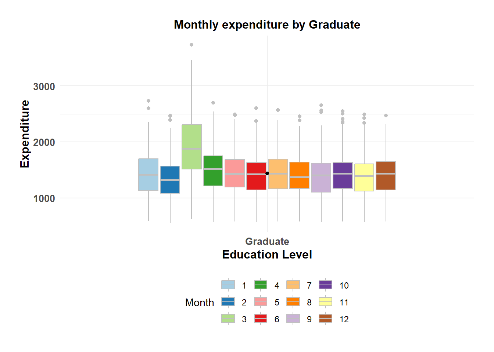
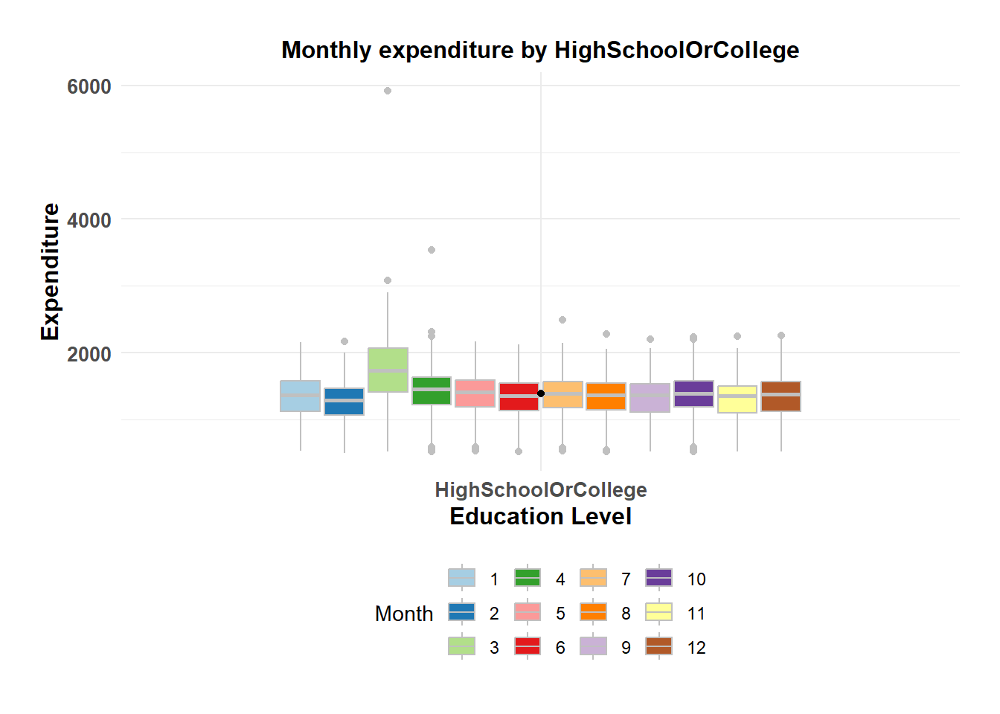
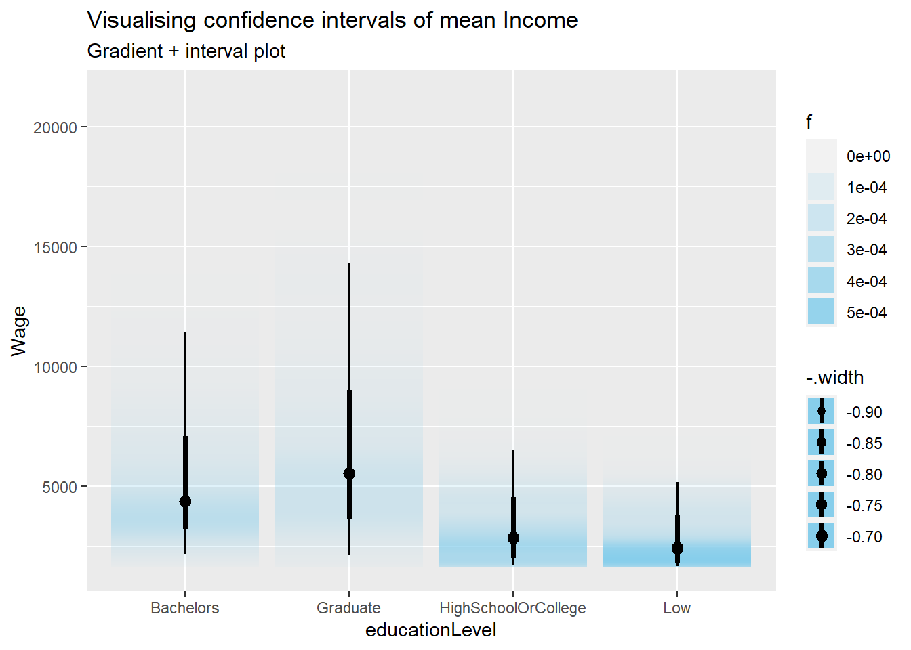
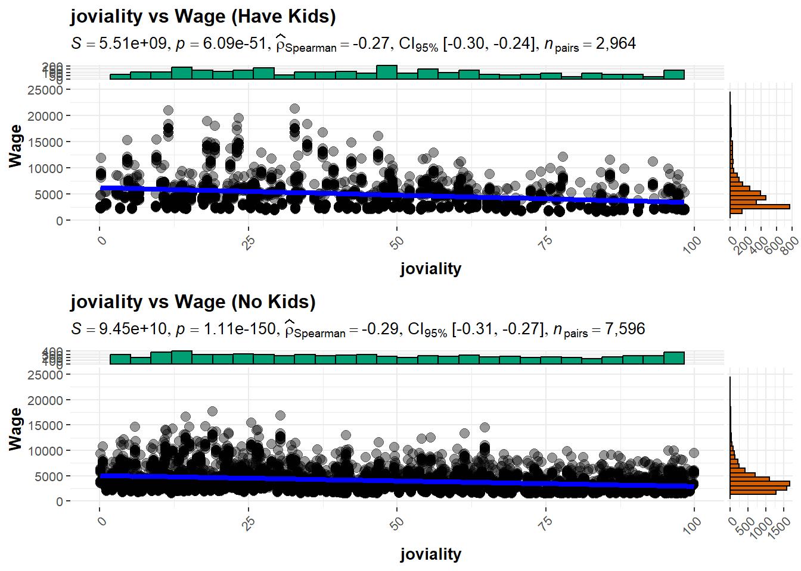
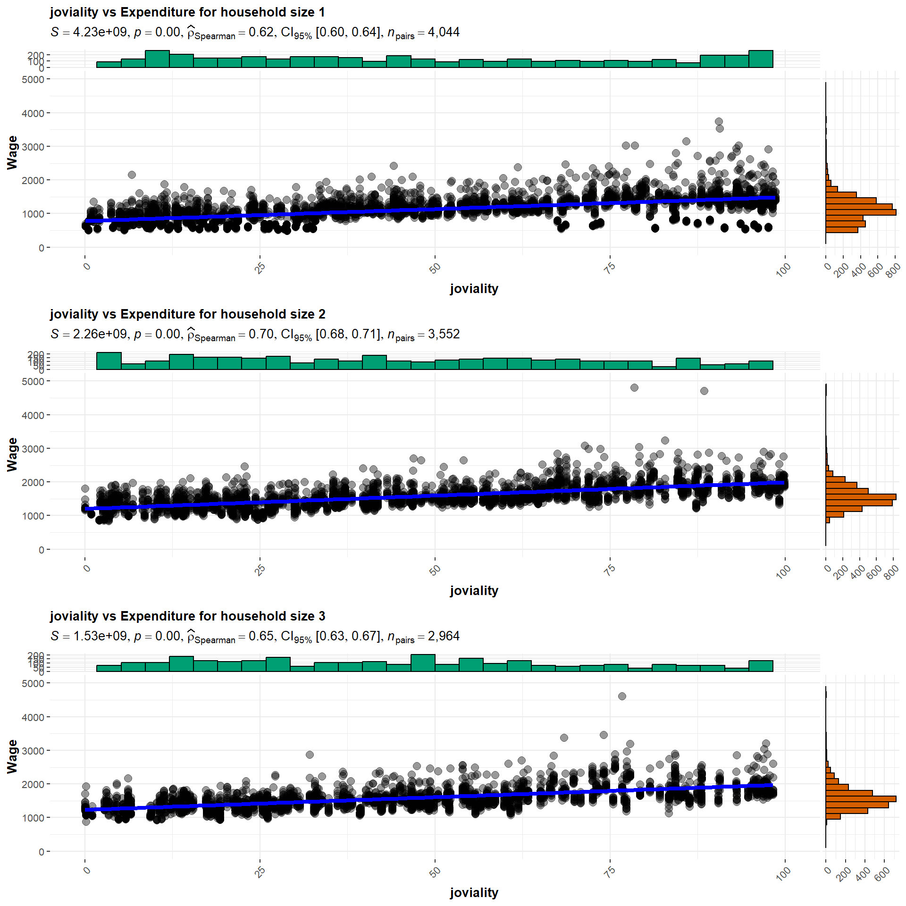

Show the code
pacman::p_load(ggiraph, plotly,
patchwork, DT, tidyverse, dplyr, gganimate, ggridges, ggplot2, ggstatsplot, cowplot, ragg, ungeviz, ggdist, ggside, viridis) In this take-home exercise, we are required to apply the concepts and methods learned in Lesson 1-4 to reveal the demographic and financial characteristics of the city of Engagement, using appropriate static and interactive statistical graphics methods. This exercise requires a user-friendly and interactive solution that helps city managers and planners to explore complex data in an engaging way and reveal hidden patterns. The data should be processed by using the appropriate tidyverse family of packages and the statistical graphics must be prepared using ggplot2 and its extensions.
First, write a code chunk to check, install and launch the following R packages:
ggiraph for making ‘ggplot’ graphics interactive.
plotly, R library for plotting interactive statistical graphs.
DT provides an R interface to the JavaScript library DataTables that create interactive table on html page.
tidyverse, a family of modern R packages specially designed to support data science, analysis and communication task including creating static statistical graphs.
patchwork for combining multiple ggplot2 graphs into one figure.
The code chunk below will be used to accomplish the task.
pacman::p_load(ggiraph, plotly,
patchwork, DT, tidyverse, dplyr, gganimate, ggridges, ggplot2, ggstatsplot, cowplot, ragg, ungeviz, ggdist, ggside, viridis) The code chunk below read_csv() of readr package is used to import Participants.csv & FinancialJournal.csv data file into R and save it as an tibble data frame called participants & financial.
participants <- read_csv("data/participants.csv")
financial <- read_csv("data/financialJournal.csv")we will examine the structure of the data frame using glimpse() of dplyr.
glimpse(participants)Rows: 1,011
Columns: 7
$ participantId <dbl> 0, 1, 2, 3, 4, 5, 6, 7, 8, 9, 10, 11, 12, 13, 14, 15, 1…
$ householdSize <dbl> 3, 3, 3, 3, 3, 3, 3, 3, 3, 3, 3, 3, 3, 3, 3, 3, 3, 3, 3…
$ haveKids <lgl> TRUE, TRUE, TRUE, TRUE, TRUE, TRUE, TRUE, TRUE, TRUE, T…
$ age <dbl> 36, 25, 35, 21, 43, 32, 26, 27, 20, 35, 48, 27, 34, 18,…
$ educationLevel <chr> "HighSchoolOrCollege", "HighSchoolOrCollege", "HighScho…
$ interestGroup <chr> "H", "B", "A", "I", "H", "D", "I", "A", "G", "D", "D", …
$ joviality <dbl> 0.001626703, 0.328086500, 0.393469590, 0.138063446, 0.8…glimpse(financial)Rows: 1,513,636
Columns: 4
$ participantId <dbl> 0, 0, 0, 1, 1, 1, 2, 2, 2, 3, 3, 3, 4, 4, 4, 5, 5, 5, 6,…
$ timestamp <dttm> 2022-03-01, 2022-03-01, 2022-03-01, 2022-03-01, 2022-03…
$ category <chr> "Wage", "Shelter", "Education", "Wage", "Shelter", "Educ…
$ amount <dbl> 2472.50756, -554.98862, -38.00538, 2046.56221, -554.9886…The code chunk below will be used to perform the missing value checking.
#Check for missing values
any(is.na(participants))[1] FALSEany(is.na(financial))[1] FALSE| Issues | Description | Resolution |
|---|---|---|
| timestamp | Some rows have time data while some rows don’t. | As the time data doesn’t help with the analysis, we should exclude the time data, leave only the date. And extract month to create month variable. |
| Data Duplicates | Duplicate entries for Education and Shelter expenses on 1st March 2022 | Remove the duplicates |
| Incompleted records for a specific group of participants | There are 131 participants who had only March expenses, which may indicate they no longer lived in the town | Remove 131 participants from the merged dataframe |
| Inappropriate table format | Expenses and income are aggregated in one category variable | Transpose the amount of expense and income to individual variable labeled by the category for financial table |
| Table merge | The participants data and fanciancial data are in two tables | For ease data analysis, we should merge two tables together and grouped the records by participantId and month |
| New variables create | Create expenditures and savings for participants financial health analysis | Expenditures should includes Education, Food, Recreation, Shelter cost. Savings should be Wage minus the expenditures. |
Below code chunks will work on the above data issues and create the final merged dataframe merged_T.
#convert timestamp to date type and extract yearmonth variable
financial <- financial %>%
mutate(date= as.Date(timestamp)) %>%
mutate(yearmonth = format(financial$timestamp, "%Y-%m"))
# remove duplicated rows
financial <- distinct(financial) %>%
select(-timestamp) %>% #remove timestamp column
# group data by participantId, yearmonth and category of expenses
group_by(participantId, yearmonth, category) %>%
# to create total_amount by summerize the amount from each category, convert the amount of expenditures to positive nums
summarise(total_amount = sum(amount)) %>%
mutate(abs_amount = abs(total_amount))
#create month variable and convert to integer
financial$month <- as.integer(substr(financial$yearmonth, 6, 7))
#convert abs_amount as integer
financial$abs_amount <- round(financial$abs_amount, 0)#transpose amount labeled by category
financial_t <- financial %>%
select(-total_amount) %>%
pivot_wider(
names_from = category,
values_from = abs_amount,
values_fn = sum,
values_fill = 0
) %>%
select(-RentAdjustment) %>% #remove RentAdjustment as it already accounted in March Shelter cost
mutate(hourlyWage = round(Wage/(44*4)), 0) #based on weekly 44 hours working hours and a month has 4 weeks
financial_t# A tibble: 10,691 × 10
# Groups: participantId, yearmonth [10,691]
participantId yearmonth month Education Food Recreation Shelter Wage
<dbl> <chr> <int> <dbl> <dbl> <dbl> <dbl> <dbl>
1 0 2022-03 3 38 268 349 555 11932
2 0 2022-04 4 38 266 219 555 8637
3 0 2022-05 5 38 265 383 555 9048
4 0 2022-06 6 38 257 466 555 9048
5 0 2022-07 7 38 270 1070 555 8637
6 0 2022-08 8 38 262 314 555 9459
7 0 2022-09 9 38 256 295 555 9048
8 0 2022-10 10 38 267 25 555 8637
9 0 2022-11 11 38 261 377 555 9048
10 0 2022-12 12 38 266 357 555 9048
# ℹ 10,681 more rows
# ℹ 2 more variables: hourlyWage <dbl>, `0` <dbl>#Remove the 131 no. participants which only have March expenses
financial_t_r <- financial_t[financial_t$Shelter != 0, ]merged <- merge(participants, financial, by = "participantId", all = TRUE)
#merge participantid and financial tables
merged_T <- merge(participants, financial_t_r, by = "participantId", all = FALSE) %>%
mutate(expenditure = Education + Food + Recreation + Shelter) %>%
mutate(savings = Wage - expenditure) %>%
select(participantId, yearmonth, month, householdSize, haveKids, age, educationLevel, joviality, Wage, hourlyWage, expenditure, savings, Education, Food, Recreation, Shelter)
#convert joviality column as percentage and round to 2 decimal places
merged_T$joviality <- round(merged_T$joviality*100, 2)#computing summary statistics of mean, median and lower and upper whiskers in boxplot
wage_mean <- round(mean(merged_T$Wage))
wage_median <- round(median(merged_T$Wage))
ymax <- as.numeric(round((IQR(merged_T$Wage)*1.5) +
quantile(merged_T$Wage,0.75)))
ymin <- as.integer(min(merged_T$Wage))
#plotting histogram
h <- ggplot(data = merged_T, aes(x = Wage)) +
geom_histogram(color="black", fill="azure4", binwidth = 300) +
scale_x_continuous(limits = c(0,20000), labels = scales::comma) +
labs(x = "Income", y = "Number of transactions") +
geom_vline(aes(xintercept = wage_mean), col="darkblue", linewidth=1) +
annotate("text", x=5500, y=1150, label="Mean wage:",
size=3, color="darkblue") +
annotate("text", x=5500, y=1100, label=format(wage_mean, big.mark = ","),
size=3, color="darkblue") +
geom_vline(aes(xintercept = wage_median), col="lightpink4", linewidth=1) +
annotate("text", x=2200, y=1150, label="Median wage",
size=3, color="lightpink4") +
annotate("text", x=2200, y=1100, label=format(wage_median, big.mark = ","),
size=3, color="lightpink4") +
theme(axis.text.x = element_text(size=8))
#plotting boxplot
b <- ggplot(data = merged_T, aes(y = Wage)) +
geom_boxplot(outlier.colour="firebrick", outlier.shape=12,
outlier.size=1, notch=FALSE) +
coord_flip() + labs(y = "", x = "") +
scale_y_continuous(limits = c(0,20000), labels = scales::comma) +
theme(axis.text = element_blank(), axis.ticks = element_blank()) +
stat_boxplot(geom="errorbar", width=0.5) +
annotate("text", x=0.35, y=ymax, label=format(ymax, big.mark = ","),
size=3, color="lightpink4") +
annotate("text", x=0.35, y=ymin, label=format(ymin, big.mark = ","),
size=3, color="lightpink4")
#combining plots
price_distri <- b / h + plot_layout(heights = c(1, 4))
price_distri + plot_annotation(title = "Distribution of Income status",
subtitle = "There is a right-skewed distribution \ni.e. mean income > median income. There is also a large number of outliers (income >$9,166).",
theme = theme(
plot.title = element_text(size = 12),
plot.subtitle = element_text(size = 10)))
The Income plot shows right-skewed distribution, ie. mean income is larger than median income and there are large amount of outliers.
#computing summary statistics of mean, median and lower and upper whiskers in boxplot
expense_mean <- round(mean(merged_T$expenditure))
expense_median <- round(median(merged_T$expenditure))
ymax <- as.numeric(round((IQR(merged_T$expenditure)*1.5) +
quantile(merged_T$expenditure,0.75)))
ymin <- as.integer(min(merged_T$expenditure))
#plotting histogram
h <- ggplot(data = merged_T, aes(x = expenditure)) +
geom_histogram(color="black", fill="azure4", binwidth = 50) +
scale_x_continuous(limits = c(0,5000), labels = scales::comma) +
labs(x = "Expenditure", y = "Number of transactions") +
geom_vline(aes(xintercept = expense_mean), col="darkblue", linewidth=1) +
annotate("text", x=1000, y=750, label="Mean expense:",
size=3, color="darkblue") +
annotate("text", x=1000, y=710, label=format(expense_mean, big.mark = ","),
size=3, color="darkblue") +
geom_vline(aes(xintercept = expense_median), col="lightpink4", linewidth=1) +
annotate("text", x=2000, y=750, label="Median expense",
size=3, color="lightpink4") +
annotate("text", x=2000, y=710, label=format(expense_median, big.mark = ","),
size=3, color="lightpink4") +
theme(axis.text.x = element_text(size=8))
#plotting boxplot
b <- ggplot(data = merged_T, aes(y = expenditure)) +
geom_boxplot(outlier.colour="firebrick", outlier.shape=12,
outlier.size=1, notch=FALSE) +
coord_flip() + labs(y = "", x = "") +
scale_y_continuous(limits = c(0,5000), labels = scales::comma) +
theme(axis.text = element_blank(), axis.ticks = element_blank()) +
stat_boxplot(geom="errorbar", width=0.5) +
annotate("text", x=0.35, y=ymax, label=format(ymax, big.mark = ","),
size=3, color="lightpink4") +
annotate("text", x=0.35, y=ymin, label=format(ymin, big.mark = ","),
size=3, color="lightpink4")
#combining plots
price_distri <- b / h + plot_layout(heights = c(1, 4))
price_distri + plot_annotation(title = "Distribution of Expenditure status",
subtitle = "The plot doesn't show normally distribution \n although mean and median are nearly the same. There is also a large number of outliers (income >$2,360).",
theme = theme(
plot.title = element_text(size = 12),
plot.subtitle = element_text(size = 10)))
Also the mean and median of the expenditures are nearly the same, however the disturbition plot does not show normally distribution, and there are large amount of outliers as well.
To use the one-sample test in gghistostats() to test if the numerical variables are normally distributed, we set the type argument to “shapiro”.
set.seed(1234)
#need to change bar colors, line color, ggtitles, gglabs
p1 <- gghistostats(
data = merged_T,
x = joviality,
type = "shapiro",
test.value = 0.6,
xlab = "Joviality") +
theme_minimal() +
theme(text = element_text(family = "Garamond"))
p2 <- gghistostats(
data = merged_T,
x = Wage,
type = "shapiro",
test.value = 60,
xlab = "Wage"
) +
theme_minimal() +
theme(text = element_text(family = "Garamond"))
p3 <- gghistostats(
data = merged_T,
x = expenditure,
type = "shapiro",
test.value = 550,
xlab = "Expenditure"
) +
theme_minimal() +
theme(text = element_text(family = "Garamond"))
p4 <- gghistostats(
data = merged_T,
x = savings,
type = "shapiro",
test.value = 1000,
xlab = "Savings"
) +
theme_minimal()+
theme(text = element_text(family = "Garamond"))
plot_grid(p1, p2, p3, p4, ncol = 2)Shapiro-Wilk test statistics have all 4 numbers of p value <0.05 within the 95% CI level for Joviality, Wage, Expenditure and savings, this suggests that there is enough statistically evidence to confirm the distributions for above numerical variables are not normally distributed.
fin_stats <- merged %>%
group_by(category, month) %>%
mutate(transaction_n = n()) %>%
mutate(median_amount = median(abs_amount)) %>%
select(category, transaction_n, median_amount, month) %>%
distinct() %>%
arrange(category)
ggplot(fin_stats, aes(x = category, y = median_amount,
size = transaction_n,
colour = category)) +
geom_point(alpha = 0.7, show.legend = T) +
scale_size(range = c(2, 12)) +
labs(title = "Median expsense and wage over time (2022-03 to 2023-02)",
subtitle = "Month: {as.integer(frame_time)}",
x = "Expenses and Wage", y = "Amount",
size = "No. of Transactions", color = "category") +
transition_time(as.integer(month)) +
ease_aes('linear') +
theme(axis.text.x = element_text(angle = 90, hjust = 1, vjust = 0.5),
title = element_text(size = 12)) +
scale_y_continuous(limits = c(25,7500))From the plot, we can observe that median expenses on education and food are the least and are stable throughout the year. Spending for recreation are in between shelter and other expenditures, and has higher spending during the month of March. The median Income is generally stable expect in the month of March which is almost doubled than rest of the months.
In the code chunk below, ggbetweenstats() is used to build a visual for One-way ANOVA test on Wage by Education Level (non-parametric since we had known Wage is not normally distributed).
#plotting violin plot across wage
ggbetweenstats(
data = merged_T,
x = educationLevel,
y = Wage,
type = "np",
mean.ci = TRUE,
pairwise.comparisons = TRUE,
pairwise.display = "s",
p.adjust.method = "fdr",
messages = FALSE
)From the Oneway Anova Test results, we observe that 4 different education levels have a higher number of significantly different relationships. This shows that there are indeed differences in Income status in each education levels.
The box plot shows that mediBacheloran income for residences with high education levels (Graduate, Bachelors) are higher than Low and high school or College levels.
ggplot(na.omit(merged_T),aes(x = educationLevel, y = expenditure)) +
geom_boxplot(aes(fill = as.factor(month)), color = "#c0c0c0") +
stat_summary(fun.y = "median", geom = "point", color = "black") +
theme_minimal() +
scale_fill_brewer(palette = "Paired") +
labs( title = "Monthly expenditure by Education Level",
y = "Expenditure",
x = "Education Level",
fill = "Month") +
theme(text = element_text(family = "Garamond"),
plot.title = element_text(hjust = 0.5, size = 12, face = 'bold'),
plot.margin = margin(20, 20, 20, 20),
legend.position = "bottom",
axis.text = element_text(size = 10, face = "bold"),
axis.title.x = element_text(hjust = 0.5, size = 12, face = "bold"),
axis.title.y = element_text(hjust = 0.5, size = 12, face = "bold"))na.omit(merged_T) %>%
filter(educationLevel == "Graduate") %>%
ggplot(aes(x = educationLevel, y = expenditure)) +
geom_boxplot(aes(fill = as.factor(month)), color = "#c0c0c0") +
stat_summary(fun.y = "median", geom = "point", color = "black") +
theme_minimal() +
scale_fill_brewer(palette = "Paired") +
labs( title = "Monthly expenditure by Graduate",
y = "Expenditure",
x = "Education Level",
fill = "Month") +
theme(text = element_text(family = "Garamond"),
plot.title = element_text(hjust = 0.5, size = 12, face = 'bold'),
plot.margin = margin(20, 20, 20, 20),
legend.position = "bottom",
axis.text = element_text(size = 10, face = "bold"),
axis.title.x = element_text(hjust = 0.5, size = 12, face = "bold"),
axis.title.y = element_text(hjust = 0.5, size = 12, face = "bold"))
# Bachelors
na.omit(merged_T) %>%
filter(educationLevel == "Bachelors") %>%
ggplot(aes(x = educationLevel, y = expenditure)) +
geom_boxplot(aes(fill = as.factor(month)), color = "#c0c0c0") +
stat_summary(fun.y = "median", geom = "point", color = "black") +
theme_minimal() +
scale_fill_brewer(palette = "Paired") +
labs( title = "Monthly expenditure by Bachelors",
y = "Expenditure",
x = "Education Level",
fill = "Month") +
theme(text = element_text(family = "Garamond"),
plot.title = element_text(hjust = 0.5, size = 12, face = 'bold'),
plot.margin = margin(20, 20, 20, 20),
legend.position = "bottom",
axis.text = element_text(size = 10, face = "bold"),
axis.title.x = element_text(hjust = 0.5, size = 12, face = "bold"),
axis.title.y = element_text(hjust = 0.5, size = 12, face = "bold"))# Bachelors
na.omit(merged_T) %>%
filter(educationLevel == "HighSchoolOrCollege") %>%
ggplot(aes(x = educationLevel, y = expenditure)) +
geom_boxplot(aes(fill = as.factor(month)), color = "#c0c0c0") +
stat_summary(fun.y = "median", geom = "point", color = "black") +
theme_minimal() +
scale_fill_brewer(palette = "Paired") +
labs( title = "Monthly expenditure by HighSchoolOrCollege",
y = "Expenditure",
x = "Education Level",
fill = "Month") +
theme(text = element_text(family = "Garamond"),
plot.title = element_text(hjust = 0.5, size = 12, face = 'bold'),
plot.margin = margin(20, 20, 20, 20),
legend.position = "bottom",
axis.text = element_text(size = 10, face = "bold"),
axis.title.x = element_text(hjust = 0.5, size = 12, face = "bold"),
axis.title.y = element_text(hjust = 0.5, size = 12, face = "bold"))
# Bachelors
na.omit(merged_T) %>%
filter(educationLevel == "Low") %>%
ggplot(aes(x = educationLevel, y = expenditure)) +
geom_boxplot(aes(fill = as.factor(month)), color = "#c0c0c0") +
stat_summary(fun.y = "median", geom = "point", color = "black") +
theme_minimal() +
scale_fill_brewer(palette = "Paired") +
labs( title = "Monthly expenditure by Low",
y = "Expenditure",
x = "Education Level",
fill = "Month") +
theme(text = element_text(family = "Garamond"),
plot.title = element_text(hjust = 0.5, size = 12, face = 'bold'),
plot.margin = margin(20, 20, 20, 20),
legend.position = "bottom",
axis.text = element_text(size = 10, face = "bold"),
axis.title.x = element_text(hjust = 0.5, size = 12, face = "bold"),
axis.title.y = element_text(hjust = 0.5, size = 12, face = "bold"))The best metric for comparison over time and distribution is the median (they are unaffected by outliers). In the graph above, we observe that there is no discernible difference in the median expenditures for 4 education levels. However, we observed expenses in March are higher than the rest of the time across all education levels.
In the code chunk below, stat_gradientinterval() of ggdist is used to build a visual for displaying distribution of Income by Education Level
merged_T %>%
ggplot(aes(x = educationLevel,
y = Wage)) +
stat_gradientinterval(
fill = "skyblue",
show.legend = TRUE
) +
labs(
title = "Visualising confidence intervals of mean Income",
subtitle = "Gradient + interval plot")
As shown above, income have higher uncertainties on higher education level eg. Gradute and Bachelors. This could be potentially due to large presence of outliers in both education levels. On the opposite side, income for medium and low education level have lower uncertainties, which might indicate lower presence of outliers.
f1 <- merged_T %>%
filter(haveKids == TRUE) %>%
ggscatterstats(x = joviality, y = Wage,
type = "nonparametric") +
theme(axis.text.x = element_text(angle = 45, vjust = 1, hjust = 1)) +
labs(title = "joviality vs Wage (Have Kids)",
x = "joviality", y = "Wage") +
scale_x_continuous(limits = c(0, 100)) +
scale_y_continuous(limits = c(0, 25000))
f2 <- merged_T %>%
filter(haveKids == FALSE) %>%
ggscatterstats(x = joviality, y = Wage,
type = "nonparametric") +
theme(axis.text.x = element_text(angle = 45, vjust = 1, hjust = 1)) +
labs(title = "joviality vs Wage (No Kids)",
x = "joviality", y = "Wage") +
scale_x_continuous(limits = c(0, 100)) +
scale_y_continuous(limits = c(0, 25000))
plot_grid(f1, f2, ncol = 1)
The correlation chart shows that there is a weak negative relationship (less than -0.5) between the joviality and Income level by having kids or not. The observation indicates that wealth does not unequivocally increase happiness. however, it is turned another way round. And between having or not having kids, the correlation relationship don’t have very much differences.
j1 <- merged_T %>%
filter(householdSize == 1) %>%
ggscatterstats(x = joviality, y = expenditure,
type = "nonparametric") +
theme(axis.text.x = element_text(angle = 45, vjust = 1, hjust=1),
plot.title = element_text(size = 10, face = "bold")) +
labs(title = "joviality vs Expenditure for household size 1",
x = "joviality", y = "Wage") +
scale_x_continuous(limits = c(0, 100)) +
scale_y_continuous(limits = c(0, 5000))
j2 <- merged_T %>%
filter(householdSize == 2) %>%
ggscatterstats(x = joviality, y = expenditure,
type = "nonparametric") +
theme(axis.text.x = element_text(angle = 45, vjust = 1, hjust=1),
plot.title = element_text(size = 10, face = "bold")) +
labs(title = "joviality vs Expenditure for household size 2",
x = "joviality", y = "Wage") +
scale_x_continuous(limits = c(0, 100)) +
scale_y_continuous(limits = c(0, 5000))
j3 <- merged_T %>%
filter(householdSize == 3) %>%
ggscatterstats(x = joviality, y = expenditure,
type = "nonparametric") +
theme(axis.text.x = element_text(angle = 45, vjust = 1, hjust=1), plot.title = element_text(size = 10, face = "bold")) +
labs(title = "joviality vs Expenditure for household size 3",
x = "joviality", y = "Wage") +
scale_x_continuous(limits = c(0, 100)) +
scale_y_continuous(limits = c(0, 5000))
plot_grid(j1, j2, j3, ncol = 1)
The correlation chart shows that there is a strong positive relationship (more than 0.5) between the joviality and Expenditure level by the household sizes. The observation indicates that as joviality increases, the expenditure level tends to increase as well. This indicates that households with higher levels of joviality tend to have higher expenditure levels. And between the different sizes of household, the correlation relationship has higher value for household size 2 category.
The following interpretations and recommendations are made: